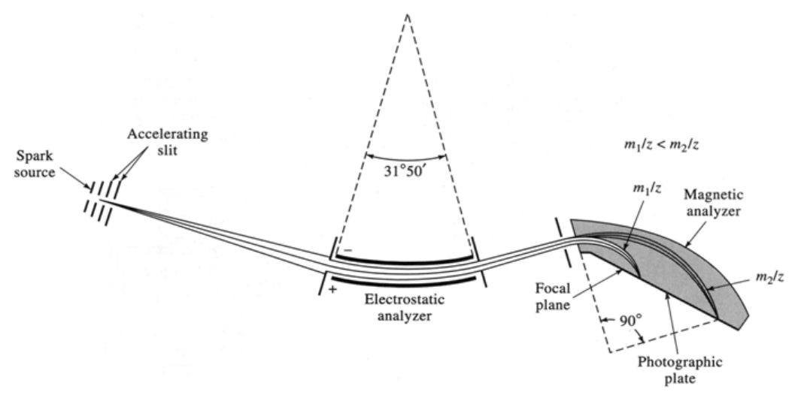

開卷有益 ／
藥師 ／ 藥物分析與生藥學 ／ 101 年第 2 次101 年第 2 次藥師藥物分析與生藥學試題與答案
這一頁是民國 101 年第 2 次藥師藥物分析與生藥學的整份歷屆試題，共 80 題，題目與標準答案出自考選部「國家考試試題及測驗式試題答案」開放資料，其中 75 題附有詳解。以下逐題列出題幹、選項與答案；要計時作答或記錄成績，請用線上練習。
考選部原始場次代碼：101100
線上作答這一科 →
全部 80 題
第 1 題
在非水酸滴定法中，避免濕氣干擾滴定的原因，係因水表現出何種特性之故？
（A） 弱酸性（B） 強酸性（C） 弱鹼性（D） 強鹼性答案：（C）
詳解與考點 正解：非水酸滴定中，水進入酸性非水溶媒會以弱鹼身分接受質子，競爭消耗滴定劑並改變終點行為；避免濕氣正是為了排除這個弱鹼性干擾，故選 C。
A：在本題的酸性非水滴定環境中，水造成干擾的主因不是供應質子的弱酸性。
B：水不是強酸，不能以強酸性解釋其與酸滴定劑競爭的現象。
D：水雖可接受質子，卻不是強鹼；其干擾來自弱鹼性已足以影響非水系統。
本題考點：非水酸滴定（nonaqueous acid titration）——判斷水分干擾時，以其在酸性非水溶媒中的受質子能力為準；溶媒效應（solvent effect）——少量水即可改變非水滴定的酸鹼平衡與終點，故試劑與器皿須防潮。
第 2 題
2.56+100.2731+4.3-20.005=87.1281，若考慮有效數字，則應表示為：
（A） 87.1281（B） 87.128（C） 87.13（D） 87.1答案：（D）
詳解與考點 正解：此題是加減法的有效數字判讀，先按原數值計算：2.56 + 100.2731 + 4.3 - 20.005 = 87.1281。加減法結果須保留與小數位最少的數值相同的位數，4.3 只到小數點後一位，因此 87.1281 要取到小數點後一位為 87.1，故選 D。
A：87.1281 保留了未經有效數字規則處理的全部計算位數，精確度被高估。
B：87.128 雖刪除一位，仍保留三位小數，超出 4.3 所容許的小數位。
C：87.13 保留兩位小數，仍比加減法中最少的小數位多一位。
本題考點：加減法有效數字（significant figures in addition and subtraction）——先完成加減，再以小數位最少的原始測量值決定結果位數；有效數字與小數位（significant figures versus decimal places）——乘除看有效數字位數，加減看小數點後位數，兩個規則不可互換。
第 3 題
下列何者為實驗中所產生之不定誤差（indeterminate errors）的特性？
（A） 非常大的誤差出現率高（B） 同值異號（絕對值相同）的誤差出現率相同（C） 小誤差比大誤差的出現率低（D） 誤差之出現率無法預估答案：（B）
詳解與考點 正解：不定誤差又稱 random error，圍繞真值呈隨機正負分布；絕對值相同而符號相反的誤差，出現機率相同，故選 B。
A：隨機誤差通常以小誤差較常見、大誤差較少見為特徵，不能說非常大的誤差出現率高。
C：小誤差的出現率應高於大誤差，敘述將常態分布的頻率方向倒置。
D：不定誤差雖不能預測單次結果的方向，但可用統計分布估計其出現機率，並非完全無法預估。
本題考點：不定誤差（indeterminate error）——判斷隨機誤差時，看其是否圍繞真值正負對稱且小誤差較常見；常態分布（normal distribution）——單次誤差不可預知，但多次測量可用機率分布描述頻率。
第 4 題
評估一個含量測定法之重覆性（repeatability）時，下列何項目未列入考慮？
（A） 標準品及檢品之稱量（B） 所有溶液之新鮮配製及標定（C） 整個過程中的稀釋及萃取步驟（D） 分析程序及不同分析員、實驗室的狀況答案：（D）
詳解與考點 正解：重覆性（repeatability）要求在相同操作條件、短時間內重作完整分析，因此稱量、配製與處理步驟都要納入同一程序的變異評估；（D）把不同分析員與實驗室也放進條件中，已跨出同一操作條件，屬於中間精密度或再現性所考慮的變異，故選 D。
A：標準品及檢品的稱量是每次完整分析都會重作的前處理步驟，稱量誤差會反映在含量結果，應列入重覆性評估。
B：所有溶液重新配製與標定會帶入配液及濃度設定的變異；若它們是分析程序的一部分，就應在重覆性試驗中一併重作。
C：稀釋及萃取會影響待測物實際進入測定系統的量，省略這些步驟只是在評估儀器重覆讀值，不是完整含量測定法的重覆性。
本題考點：重覆性（repeatability）——判斷時看是否在同一分析員、同一儀器與同一實驗室的短時間條件下重作整個方法；中間精密度（intermediate precision）——同一實驗室內改變分析員或日期時才用此概念評估；再現性（reproducibility）——跨實驗室的變異不能混入重覆性。
第 5 題
能有效地以有機溶媒萃取溶於水中的鹼性物時，水溶液的pH值比鹼性物的pKa值一般應差距多少（pH- pKa）？
（A） ≥1（B） 0（C） -1（D） -2答案：（A）
詳解與考點 正解：弱鹼在水中能否進入有機層，取決於游離鹼 B 是否為主要型態。對其共軛酸 BH+，Henderson–Hasselbalch 式為 pH-pKa = log([B]/[BH+])；當 pH-pKa ≥ 1 時，[B]/[BH+] ≥ 10，至少約九成為中性游離鹼，最利於有機溶媒萃取，故選 A。
B：在 pH-pKa = 0 時，[B]與[BH+]相等，只有約一半為中性態；雖可能有部分進入有機層，但不是有效萃取所需的偏向條件。
C、D：pH-pKa 分別為 -1 與 -2 時，[B]/[BH+]分別為 1/10 與 1/100，主要甚至近乎全為帶電的 BH+，會偏留水層而非有機層。
本題考點：液液萃取的離子化控制（ionization-controlled extraction）——要把待萃取物調成中性型態以增加有機層分配；弱鹼的 Henderson–Hasselbalch 關係（Henderson–Hasselbalch equation for weak bases）——pH 高於 pKa 時游離鹼比例上升，差 1 個 pH 單位即為約 10:1；分配係數（partition coefficient）——比較兩相分布前，先分清中性分子與帶電物種。
第 6 題
下列有關弱鹼性物質之非水滴定的敘述，何者錯誤？
（A） 結晶紫為弱酸，故可當指示劑（B） 鹼性物質之鹽酸鹽，滴定前應加醋酸汞（C） 鹼性物質之醋酸鹽溶於冰醋酸後，可直接滴定（D） 醋酸酐可除去滴定液過氯酸中的水分答案：（A）
詳解與考點 正解：以過氯酸在冰醋酸中滴定弱鹼時，指示劑本身須能接受質子而顯色；結晶紫（crystal violet）是作為弱鹼性指示劑使用，不是因為弱酸性才適用。故（A）把其酸鹼性質說反，故選 A。
B：鹼性物質鹽酸鹽中的氯離子會干擾滴定反應；滴定前加入醋酸汞可與氯離子形成穩定的氯化汞，先消除該干擾。
C：鹼性物質的醋酸鹽溶於冰醋酸時，醋酸根與溶媒同系，對過氯酸滴定的干擾較小，可直接進行滴定。
D：醋酸酐會與水反應生成醋酸，可降低過氯酸滴定液的含水量；水會削弱非水介質中酸鹼反應與終點的清晰度。
本題考點：弱鹼的非水滴定（nonaqueous titration of weak bases）——選冰醋酸等酸性介質並以過氯酸滴定，可增強弱鹼接受質子的反應；非水指示劑（nonaqueous indicator）——判斷指示劑時看其在該介質中受質子化後的變色行為；鹽酸鹽前處理（hydrochloride salt pretreatment）——氯離子會造成干擾時，以醋酸汞先行處理。
第 7 題
含N-烷基取代物之磺胺類藥物，以非水滴定法測其含量時，其最適當之溶媒為：
（A） 苯（B） 乙二胺（C） 吡啶（D） 冰醋酸答案：（B）
詳解與考點 正解：N-烷基取代的磺胺類保留的 sulfonamide N-H 酸性較弱，非水滴定需要以較強鹼性、能接受質子的溶媒拉開酸鹼反應；乙二胺（ethylenediamine）正是用來增強這類弱酸可滴定性的溶媒，故選 B。
A：苯是低極性、幾乎不具酸鹼作用的溶媒，既不利溶解也不能有效接受磺胺類弱酸釋出的質子。
C：吡啶雖具鹼性，但接受質子的能力較乙二胺弱；對酸性很弱的 N-烷基磺胺類，終點不如以乙二胺為介質時清楚。
D：冰醋酸是酸性溶媒，會抑制弱酸解離，適合的方向是增強弱鹼受質子化，而非測定此類弱酸。
本題考點：非水滴定溶媒選擇（nonaqueous solvent selection）——測弱酸時選能接受質子的鹼性溶媒，以把反應推向可定量的方向；磺胺類酸性（sulfonamide acidity）——N-烷基取代可使酸性變弱，判斷時要看保留的 sulfonamide N-H；終點清晰度（endpoint sharpness）——溶媒酸鹼性與溶質強弱不相配時，指示終點會變鈍。
第 8 題
關於以矽膠為固相之萃取法（solid-phase extraction），下列敘述何者不當？
（A） 檢品為低極性化合物（B） 通常以中極性溶劑沖洗（C） 以較高極性溶劑沖提檢品（D） 此膠體之檢品容量（capacity）為其質量的1-5%答案：（A）
詳解與考點 正解：矽膠是極性固相，正常相 SPE 依極性吸附；非極性物質和矽膠作用弱，容易在上樣或沖洗時直接流失，不能藉此完成有效保留與分離。因此（A）低極性檢品不適用，故選 A。
B：中極性溶劑可作選擇性沖洗，移除結合較弱的雜質而保留較強吸附的成分；實際選擇仍要配合檢品與雜質的極性，但此方向合理。
C：提高沖提溶劑極性可加強其與矽膠表面的競爭作用，將原先被吸附的檢品洗脫出來，符合正常相 SPE 的操作順序。
D：矽膠 SPE 的樣品負載通常以吸附劑質量的低百分比控制；題目所列 1-5% 是此類固相容量的常用範圍，並非不當敘述。
本題考點：正常相固相萃取（normal-phase solid-phase extraction）——極性固定相優先保留極性較高的檢品，低極性成分容易穿透；選擇性洗脫（selective elution）——由較低到較高極性調整沖洗與沖提溶劑，利用吸附強度差分離；固相容量（sorbent capacity）——上樣量超過固相負荷會造成穿透與回收率下降。
第 9 題
下列有關砷檢查法之敘述何者正確？
（A） 氣體發生瓶中生成的氣體為砷化氫及其他氣體（B） 在吸收管中盛有鄰菲囉啉（o-phenanthroline）用以吸收砷化氫（C） 在洗淨管中充填含硝酸銀試液的棉花，以濾除其他氣體（D） 在吸收管中的液體呈現綠色，在380 nm波長比色答案：（A）
第 10 題
下列何者不是生物鹼試劑？
（A） Iodine TS（B） Acetic anhydride-sulfuric acid TS（C） Mercuric iodide TS（D） Mercuric potassium iodide TS答案：（B）
詳解與考點 正解：生物鹼試劑的共同用途是利用生物鹼在酸性下形成的陽離子，與碘化物或含汞複合陰離子生成特徵沉澱；醋酸酐-硫酸試液則是針對 sterol、triterpenoid 等結構的顯色反應，不是生物鹼試劑，故選 B。
A：Iodine TS 可與生物鹼形成特徵性的碘化物或加成沉澱，屬於生物鹼初步鑑別可用的試劑。
C：Mercuric iodide TS 含有可與生物鹼陽離子形成難溶複合物的組成，屬生物鹼鑑別常用的含汞碘化物試劑類型。
D：Mercuric potassium iodide TS 即常用的 Mayer 類試劑，可使多種生物鹼產生沉澱，因此不能選為不是生物鹼試劑者。
本題考點：生物鹼沉澱試劑（alkaloid precipitating reagents）——先看試劑能否與帶正電的生物鹼形成難溶離子對或複合物；Mayer 試劑（Mayer reagent）——以碘化汞鉀系統形成沉澱，是生物鹼鑑別的代表性反應；醋酸酐-硫酸反應（Liebermann–Burchard reaction）——用於 sterol 與 triterpenoid 類的顯色，不可因同為植物成分檢驗而混列。
第 11 題
硝酸苯汞（phenylmercuric nitrate）的汞含量測定中，於加入甲酸和鋅粉反應後，最後以硫氰酸銨液滴定 之，加入鋅粉的目的為何？
（A） 防止突沸（B） 當催化劑（C） 當還原劑（D） 當氧化劑答案：（C）
詳解與考點 正解：鋅粉加入甲酸反應系統時會提供電子，將有機汞化合物中的汞種還原並使後續硫氰酸銨滴定可定量處理；它在反應中被消耗，故扮演還原劑，故選 C。
A：防止突沸是沸石或攪拌等物理操作的功能；鋅粉在此具有明確的電子轉移化學作用，不是單純改善沸騰狀態。
B：催化劑在反應後應可再生且不被計量消耗；鋅粉本身參與氧化還原，不能視為催化劑。
D：氧化劑會接受電子並使其他物質氧化；鋅提供電子使汞種還原，作用方向恰與氧化劑相反。
本題考點：還原劑（reducing agent）——判斷時看該物質是否提供電子並使另一物種氧化數下降；有機汞前處理（organomercury pretreatment）——滴定前要先把有機汞轉成反應一致、可定量處理的汞種；沉澱滴定（precipitation titration）——後續以硫氰酸根做定量時，前處理反應不能和滴定步驟混為一談。
第 12 題
某一藥物（2.0% (w/v) in 0.1 M HCl）在25 ℃，鈉D線為光源，在1 dm之儲液管，測得旋光度α= - 0.80， 則其〔α〕值為何？
（A） - 0.4°（B） - 0.8°（C） - 4°（D） - 40°答案：（D）
詳解與考點 正解：本題要用比旋光度公式 [α]D25 = α/(l·c)，其中 l 以 dm、c 以 g/mL 表示。濃度先換算：2.0% (w/v) = 2.0 g / 100 mL = 0.020 g/mL；儲液管長度 l = 1 dm。代入得 [α]D25 = -0.80° / (1 dm × 0.020 g/mL) = -40°·mL/(dm·g)，慣用表示為 -40°，故選 D。
A：-0.4°等於把 2.0%直接當作 2.0 g/mL 代入，忽略百分濃度是每 100 mL 所含溶質的表示法。
B：-0.8°只是儀器在指定管長與濃度下量到的觀察旋光度 α，尚未以 l 與 c 標準化。
C：-4°會對應到 c = 0.20 g/mL 的錯誤濃度，將 2.0% (w/v) 的小數點向右移了一位。
本題考點：比旋光度（specific rotation）——以 [α] = α/(l·c) 將觀察旋光度校正為指定管長與濃度下的值；重量體積百分濃度（weight/volume percentage）——2.0% (w/v) 必先換成 0.020 g/mL，不能直接以數字 2.0 代入；單位一致性（unit consistency）——管長用 dm、濃度用 g/mL 時，才能套用本題的比旋光度公式。
第 13 題
請問下列何者屬於吸收（absorption）光譜？
（A） 拉曼光譜（B） 質譜（C） 螢光光譜（D） 紅外光光譜答案：（D）
詳解與考點 正解：紅外光光譜（IR）記錄分子吸收特定紅外輻射後的強度改變，屬典型 absorption spectrum；官能基振動造成的吸收帶正是其判讀依據，故選 D。
A：拉曼光譜量測的是入射光經分子非彈性散射後的位移與強度，訊號來源是散射而非光被樣品吸收。
B：質譜以離子的質荷比與離子訊號強度作圖，並不以電磁輻射被樣品吸收後的波長分布為讀值。
C：螢光光譜先以光激發分子，再量測其放出的螢光；它關注的是發射光而非入射光的吸收衰減。
本題考點：吸收光譜（absorption spectrum）——判斷時看儀器是否比較入射光與透過樣品後的光強度；散射光譜（scattering spectrum）——拉曼訊號來自非彈性散射，不等同吸收；發射光譜（emission spectrum）——螢光與磷光量測激發後放出的光。
第 14 題
下列何種鍵結可在紅外線光譜的3200~3500 cm-1區間產生吸收訊號？
（A） C–O（B） C=O（C） C≡N（D） O–H答案：（D）
詳解與考點 正解：3200-3500 cm-1 是 O-H stretching 的典型寬廣吸收區，氫鍵存在時尤可變寬；因此含羥基的（D）符合此波數範圍，故選 D。
A：C-O 單鍵的伸縮振動主要落在較低的指紋區，不會以 3200-3500 cm-1 的吸收帶作為判斷特徵。
B：C=O 伸縮通常位於約 1650-1800 cm-1，一看到強而明顯的此區吸收才應考慮羰基。
C：（C）中以 C≡N 為主要特徵的三鍵伸縮位在約 2200-2300 cm-1，和羥基伸縮區間不同。
本題考點：紅外線波數判讀（IR wavenumber interpretation）——先用官能基的特徵區間快速排除不相符的鍵結；羥基伸縮（O-H stretching）——3200-3500 cm-1 的寬帶是羥基與氫鍵的重要線索；指紋區（fingerprint region）——C-O 等多種單鍵振動常落在較低波數，不能與羥基區混判。
第 15 題
在電子撞擊質譜（EI-MS）的裂解分析中，tropylium ion的產生必須是在分子結構具備那一個基團？
（A） benzyl（B） propyl（C） butyl（D） carboxylate答案：（A）
詳解與考點 正解：EI-MS 中含 benzyl 結構的分子可先形成 benzylic cation，再重排為具有芳香穩定性的 C7H7+ tropylium ion；需要的前提是芳環直接連到 benzylic carbon，因此（A）benzyl 正確，故選 A。
B、C：propyl 與 butyl 雖可裂解產生烷基碳正離子，但沒有芳環與苄位碳，無法重排成 C7H7+ tropylium ion。
D：carboxylate 的特徵裂解圍繞羧基或羰基相關片段，並未提供形成 C7H7+ 所需的苄基碳骨架。
本題考點：電子撞擊游離（electron ionization）——分子自由基陽離子裂解後，最穩定的正離子通常形成較強峰；苄基裂解（benzylic cleavage）——芳環相鄰碳形成的正離子可重排並受芳香性穩定；tropylium ion——看到 m/z 91 類訊號時，先檢查分子是否具 benzyl 結構。
第 16 題
下列何種光譜測定法與入射光（I0）之透光率（transmittance）無關？
（A） 紫外光光譜測定法（UV）（B） 可視光光譜測定法（Vis）（C） 紅外光光譜測定法（IR）（D） 原子吸收光譜測定法（AA）答案：（D）
詳解與考點 正解：UV、Vis、IR 都是分子吸收測定，讀值以透光率 T = I/I0 的光譜圖呈現，或依 Beer–Lambert law 換算為吸光度 A = -log T；原子吸收光譜（AA）量測的是原子化後基態原子對空心陰極燈特徵譜線的吸收，直接以吸光度對濃度定量，不以入射光的透光率圖譜作為讀值，故選 D。
A：UV 為分子吸收測定，透光率是 I/I0，吸光度由 -log T 取得，與入射光及透過光的比值直接相關。
B：Vis 同樣以樣品對可見光的吸收造成的透光率下降為定量基礎，並以吸光度與濃度的關係判讀。
C：IR 常以透光率對波數作圖，官能基吸收帶就是入射紅外光被樣品吸收後留下的訊號。
本題考點：透光率與吸光度（transmittance, absorbance）——判斷是否屬以透光率呈現的吸收法，看該法的讀值是否為 I/I0 的光譜圖；原子吸收光譜（atomic absorption spectrometry）——以原子化後基態原子對特徵譜線的吸光度直接對濃度定量，不以透光率圖譜作為讀值。
第 17 題
電子遷移有四種型式：①π→π* ②n→π* ③σ→σ* ④n→σ*，則結構為CH3(CH=CH)3CH3之化合物在 210 nm下，會發生何種電子遷移？
（A） ①②（B） ①③（C） ①（D） ②答案：（C）
詳解與考點 正解：CH3(CH=CH)3CH3 具有共軛 π 系統，但沒有 O、N、S 等可提供非鍵結電子的雜原子；在 210 nm 可發生的是 π→π* 遷移，即①。σ→σ* 通常需要更高能量的遠紫外光，故選 C。
A：①正確，但②n→π* 必須有非鍵結電子可躍遷到 π* 軌域；本結構只有碳與氫，沒有此種電子來源。
B：①正確，但③σ→σ* 所需能量高於共軛烯烴在 210 nm 的主要吸收，不應一併列入。
D：②n→π* 缺少必要的非鍵結電子，而且此選項漏掉共軛雙鍵最直接的①π→π* 遷移。
本題考點：紫外可見電子遷移（UV–Vis electronic transitions）——含共軛雙鍵且無雜原子時，優先判斷 π→π*；非鍵結電子（nonbonding electrons）——只有含孤對電子的雜原子才可能出現 n→π* 或 n→σ*；能隙與波長（energy gap and wavelength）——能隙越大，需要的光能越高、吸收波長越短。
第 18 題
當原子吸收光譜法之火焰溫度需高於2400℃時，下列何種氧化劑適用？
（A） Natural gas（B） Nitrous oxide（C） Air（D） Acetylene答案：（B）
詳解與考點 正解：需要高於 2400℃ 的原子化火焰時，氧化劑要能與燃料形成較高溫的火焰；nitrous oxide 與 acetylene 可形成適用的高溫火焰，其中 nitrous oxide 是氧化劑，故選 B。
A：Natural gas 是燃料而非氧化劑，且其一般火焰組合的溫度不足以作為本題所問的高溫氧化劑選擇。
C：Air 雖是常用氧化劑，但形成的 air-acetylene 火焰溫度較低，未達本題要求高於 2400℃ 的判準。
D：Acetylene 是提供燃燒熱的燃料；它可與 nitrous oxide 配對形成高溫火焰，但本身不能作為氧化劑。
本題考點：火焰原子吸收（flame atomic absorption）——先依元素原子化所需溫度選擇火焰組合；氧化劑與燃料（oxidant and fuel）——nitrous oxide、air 屬氧化端，acetylene、natural gas 屬燃料端；高溫火焰（nitrous oxide–acetylene flame）——需要較高溫時，判斷關鍵是這一對組合而不是單獨看到 acetylene。
第 19 題
下列何種藥物在鹼性環境（0.1 N NaOH）下具助色基團（auxochrome）？
（A） Procaine（B） Ephedrine（C） Dextropropoxyphene（D） Protriptyline答案：（A）
詳解與考點 正解：Procaine 的對位 amino group 直接連在芳香環上，在 0.1 N NaOH 中以未質子化型態存在，孤對電子可與芳環 π 系統共軛而增強吸收，故為 auxochrome；（A）符合，故選 A。
B：Ephedrine 的胺基與苯環之間隔著飽和碳，孤對電子不能直接與芳環 π 系統共軛，不能據此列為助色基團。
C：Dextropropoxyphene 雖有芳環與胺基，但胺基位於非共軛的側鏈，沒有直接改變芳環電子躍遷的 auxochrome 關係。
D：Protriptyline 的側鏈胺基同樣未直接共軛於發色系統；存在鹼性胺基不等於在此條件下就是芳環的助色基團。
本題考點：助色基團（auxochrome）——含孤對電子的基團必須能與既有發色系統共軛，才會顯著改變吸收；發色基團（chromophore）——芳環或共軛 π 系統提供主要電子躍遷，不能只看是否含胺基；pH 與電子效應（pH-dependent electronic effect）——胺基被質子化後孤對電子參與共軛的能力下降，判題要連同介質酸鹼性考慮。
第 20 題
下列何項最不適用為螢光光譜法之燈源？
（A） Mercury vapor lamp（B） Dye lasers（C） Xenon arc lamp（D） Deuterium lamp答案：（D）
詳解與考點 正解：螢光測定需要在激發波段有足夠輻射強度的光源，以產生可量測的 emission。Deuterium lamp 雖可供 UV absorption 使用，但光強與波段覆蓋不如螢光激發所需，最不適合，故選 D。
A：Mercury vapor lamp 可提供強度高的特定紫外或可見譜線，能對吸收帶相符的螢光物質進行有效激發。
B：Dye lasers 可調整輸出波長且具有高光強，適合需要選定激發波長的螢光測量。
C：Xenon arc lamp 具有強而連續的紫外至可見光輸出，可涵蓋多種螢光物質的激發波段。
本題考點：螢光激發光源（fluorescence excitation source）——選擇時看激發波段、輻射強度與穩定性，不能只看是否會發光；線光源與連續光源（line source and continuum source）——汞燈提供強譜線，氙燈提供寬廣連續光，皆可依分析物選用；氘燈（deuterium lamp）——常作 UV absorption 的連續光源，但不是螢光測定的優先激發來源。
第 21 題 待校
在 的氫核磁共振光譜中，那個位置的氫原子具有最大的化學位移？
（A） a（B） b（C） c（D） d答案：（A）
第 22 題
下列何者不是發色基團（chromophore）？
（A） Amino group（B） Ethylene（C） Aldehyde（D） Acetylene答案：（A）
詳解與考點 正解：chromophore 是能直接進行電子躍遷並決定紫外可見吸收的結構單元；amino group 通常提供孤對電子、改變既有 chromophore 的吸收位置或強度，角色是 auxochrome 而非 chromophore，故選 A。
B：Ethylene 的 C=C π 鍵可進行 π→π* 躍遷，是最基本的發色基團之一。
C：Aldehyde 的 C=O 具有 π 鍵與非鍵結電子，可造成特徵性的 π→π* 與 n→π* 吸收，屬發色基團。
D：Acetylene 的 C≡C 含有 π 電子系統，能進行電子躍遷，因此也具有發色基團的性質。
本題考點：發色基團（chromophore）——判斷時看結構是否本身提供可吸收紫外可見光的 π 或 n 電子躍遷；助色基團（auxochrome）——以孤對電子與既有 chromophore 共軛，改變 λmax 或吸收強度；共軛效應（conjugation）——延伸 π 系統通常降低躍遷能隙，使吸收往較長波長移動。
第 23 題
下圖為下列何種質譜儀的示意圖？

（A） 磁場單聚焦型（B） 雙聚焦型（C） 四極柱式型（D） 飛行時間型答案：（B）
第 24 題
下列何種電極可用於沉澱滴定法之終點偵測？
（A） 白金電極與甘汞電極（B） 成對白金電極（C） 玻璃電極與甘汞電極（D） 石墨電極與銀－氯化銀電極答案：（A）
詳解與考點 正解：沉澱滴定採電化學偵測終點時，需要一支量測反應系統電位變化的指示電極與一支電位固定的參考電極；白金電極在含銀離子的溶液中可隨 Ag+ 活性變化給出電位訊號，甘汞電極則提供固定的參考電位，（A）兩者搭配可構成此一量測組合，故選 A。
B：成對白金電極都是工作電極，缺少電位穩定的參考電極；它是雙電極法的配置，非題目所問此一沉澱滴定終點偵測組合。
C：玻璃電極主要響應氫離子活性，適合酸鹼滴定的 pH 變化；沉澱滴定終點不應以玻璃電極取代本題所需的指示電極。
D：銀-氯化銀電極可作參考電極，但石墨為惰性碳電極，對被滴定離子無專屬響應，不能充當此處沉澱滴定終點的指示電極；不能因含有參考電極就視為正確配置。
本題考點：電位滴定終點偵測（potentiometric endpoint detection）——要把會隨滴定改變的指示電極與電位穩定的參考電極配對；甘汞電極（calomel reference electrode）——用作固定參考，不用來直接偵測被滴定離子；沉澱滴定（precipitation titration）——終點的訊號來自溶液中離子活性於當量點前後的突變。
第 25 題
下列何種鍵結在紅外光光譜中的吸收強度最大？
（A） C–C（B） C–H（C） C–N（D） C–O答案：（D）
詳解與考點 正解：紅外光吸收強度取決於鍵結振動時偶極矩變化的大小；四種鍵結之中，C–O 的電負度差較大，伸縮振動引起的偶極矩變化也最明顯，因此吸收最強，故選 D。
A：C–C 為同元素間的鍵結，振動前後幾乎不改變偶極矩，紅外光吸收很弱，不能是最大者。
B：C–H 雖可產生伸縮與彎曲振動訊號，但鍵結極性及偶極矩變化均小於 C–O，吸收強度較低。
C：C–N 具有極性而能吸收紅外光，但其振動造成的偶極矩變化通常不及 C–O，故非本題最強吸收。
本題考點：紅外光譜吸收強度（infrared absorption intensity）——比較鍵結時，先看振動前後偶極矩改變是否明顯；偶極矩變化（dipole-moment change）——同一類振動中，鍵結極性較大的官能基通常給出較強吸收帶。
第 26 題
在測試氫－核磁共振譜時，若不須考慮鎖定磁場的需要且下列溶媒均能溶解檢品，則何者不適合充當檢品 之溶媒？
（A） CHCl3（B） CD3OD（C） CCl4（D） CS2答案：（A）
詳解與考點 正解：在不考慮鎖定磁場且各溶媒都能溶解檢品的前提下，關鍵是避免溶媒本身帶來強烈的 1H NMR 訊號。CHCl3 含有氫原子，會產生明顯的溶媒質子峰而干擾檢品譜圖；它也不是氘代溶媒，故選 A。
B：CD3OD 的可觀測氫含量遠低於一般質子化溶媒，通常可作為 1H NMR 溶媒；殘餘溶媒峰的位置固定，可與檢品訊號區分。
C：CCl4 不含氫原子，因此不會產生氫譜的溶媒質子峰；題目既已排除鎖場需求，不能因此判為不適合。
D：CS2 同樣不含氫原子，在題設的溶解度與鎖場前提下不會以溶媒質子訊號干擾檢品。
本題考點：氫核磁共振溶媒（1H NMR solvent）——先排除會產生強烈質子峰的質子化溶媒，再依檢品溶解度選擇；氘代溶媒（deuterated solvent）——一般同時用於降低溶媒氫訊號與提供鎖場訊號，題目若排除其中一項需求，仍須回到譜圖干擾判斷。
第 27 題
下列何種氣相層析管柱的McReynold's constant數值最大？
（A） Carbowax（B） Squalane（C） Silicone OV-1（D） Silicone OV-17答案：（A）
詳解與考點 正解：McReynolds' constant 用來比較氣相層析固定相的極性與選擇性，數值越大代表與各探針溶質的極性作用越強。Carbowax 為聚乙二醇型強極性固定相，在所列管柱中極性最高，因此常數最大，故選 A。
B：Squalane 是烴類非極性固定相，主要以分散力保留溶質，McReynolds' constant 很小。
C：Silicone OV-1 為低極性的矽氧烷固定相，與非極性分析物的作用為主，極性指標不會高於 Carbowax。
D：Silicone OV-17 含有可增加極性的芳基取代基，選擇性高於低極性矽氧烷，但仍不是這組中極性最強的 Carbowax。
本題考點：McReynolds' constant——比較固定相時，總常數愈大通常代表極性選擇性愈強；氣相層析固定相極性（GC stationary-phase polarity）——聚乙二醇型固定相偏強極性，烴類與低取代矽氧烷則偏非極性。
第 28 題
進行胺醣類抗生素（aminoglycoside antibiotics）的非衍生化層析分析時，使用下列何種檢測器進行較適 合？
（A） 螢光檢測器（B） 脈衝式電化學檢測器（PAD）（C） 紫外光檢測器（D） 二極體陣列檢測器（DAD）答案：（B）
詳解與考點 正解：aminoglycoside antibiotics 含多個胺基與羥基，原生結構缺乏足夠強的紫外光或螢光發色團；在適當電化學條件下卻可被氧化偵測。脈衝式電化學檢測器（PAD）能直接偵測此類高極性化合物，適合非衍生化分析，故選 B。
A：螢光檢測通常需要分析物本身具有螢光，或先以螢光試劑衍生化；題目限定非衍生化，不能作為首選。
C：紫外光檢測器仰賴可觀測的紫外吸收，aminoglycoside antibiotics 的原生紫外吸收弱，靈敏度與選擇性均受限。
D：二極體陣列檢測器（DAD）雖可同時蒐集多波長光譜，但本質仍是紫外可見光偵測，無法補足原生發色團不足的限制。
本題考點：脈衝式電化學檢測（pulsed amperometric detection, PAD）——分析物可在電極上氧化或還原且缺乏紫外發色團時，可優先考慮；胺醣類抗生素分析（aminoglycoside analysis）——面對高度極性、低紫外吸收的結構，不能只依一般 UV detector 的適用性判斷。
第 29 題
與液相層析技術比較，毛細管電泳技術所具備的優點不包括下列何者？
（A） 較短的分析時間（B） 更高的解析力（resolution）（C） 更好的再現性（D） 管柱較便宜答案：（C）
詳解與考點 正解：本題比較毛細管電泳相對液相層析的技術特性。毛細管電泳的電滲透流會受毛細管表面狀態、緩衝液 pH、離子強度與溫度影響，因此再現性未必優於液相層析；「更好的再現性」不是其固有優點，故選 C。
A：毛細管內徑小且電場可有效驅動分離，許多分析可在較短時間完成，這是其常見優點。
B：電泳遷移率差異加上均一的電滲透流，可得到窄峰與高解析力，屬毛細管電泳的重要優勢。
D：毛細管電泳使用的熔融石英毛細管成本通常低於液相層析管柱，更換耗材的負擔較小。
本題考點：毛細管電泳優缺點（capillary electrophoresis）——高速、高效率與低耗材成本是常見優點，再現性則要評估 EOF 是否穩定；電滲透流變異（electroosmotic-flow variability）——只要表面電荷或緩衝液條件改變，遷移時間便可能漂移，不能把高解析力直接等同於高再現性。
第 30 題
下列關於影響電滲透流（EOF）之敘述，何者正確？
（A） EOF隨著緩衝液的pH值增加而減少（B） EOF隨著緩衝液的離子強度增加而減少（C） EOF隨著溫度的增加而降低流速（D） EOF隨著電場的增加而減少答案：（B）
詳解與考點 正解：在未塗層熔融石英毛細管中，緩衝液離子強度升高會壓縮電雙層並降低有效 zeta potential，使電滲透流（EOF）減少，故選 B。
A：pH 升高時，毛細管壁的 silanol groups 較易去質子化，表面負電增加，通常會使 EOF 增加而非減少。
C：溫度升高會降低緩衝液黏度；在其他條件相同時，EOF 流速通常因此增加，不是降低。
D：EOF 速度與外加電場強度成正比，電場增加會使流速增加，方向與敘述相反。
本題考點：電滲透流（electroosmotic flow, EOF）——判斷方向時同時看毛細管表面電荷、zeta potential、黏度與電場；電雙層壓縮（electrical-double-layer compression）——離子強度增加時擴散層變薄，EOF 會因有效表面電位下降而變小。
第 31 題
下列何種檢測器的選擇性（selectivity）最高？
（A） UV detector（B） ELSD（C） RI detector（D） Electrochemical detector答案：（D）
詳解與考點 正解：檢測器的選擇性取決於它能否只對特定性質的分析物產生訊號。Electrochemical detector 可藉施加的電位選擇可氧化或可還原的化合物，對不具電化學活性的背景干擾較不敏感，因此選擇性最高，故選 D。
A：UV detector 可藉波長改善辨識力，但許多化合物都會吸收紫外光，選擇性通常不及以氧化還原性作篩選的檢測器。
B：ELSD 對不揮發性溶質可廣泛偵測，接近通用型偵測器；可偵測範圍廣正是其選擇性較低的原因。
C：RI detector 量測折射率差異，幾乎所有與移動相折射率不同的溶質都可能有訊號，專一性最低。
本題考點：檢測器選擇性（detector selectivity）——偵測條件越能限制為某一物理或化學性質，選擇性通常越高；電化學偵測（electrochemical detection）——先確認分析物是否具有可控制的氧化還原反應，再利用工作電位排除非電活性干擾。
第 32 題
以C8管柱進行皮質醇（hydrocortisone）的液相層析分析時，下列何種移動相會使皮質醇有最長滯留時 間？
（A） ACN／Water (30/70)（B） ACN／THF／Water (15/15/70)（C） ACN／MeOH／Water (15/15/70)（D） MeOH／Water (30/70)答案：（D）
詳解與考點 正解：C8 逆相層析中，移動相的洗脫能力越弱，皮質醇在非極性固定相停留越久。四個配方的總有機相比例皆為 30%，差異在有機改質劑；MeOH 的洗脫能力低於 ACN 與 THF，因此 MeOH/Water（30/70）給最長滯留時間，故選 D。
A：ACN/Water（30/70）中的 ACN 洗脫力較 MeOH 強，會較早把皮質醇帶離 C8 固定相。
B：ACN/THF/Water（15/15/70）含有洗脫力很強的 THF，總有機相雖仍為 30%，滯留時間不會最長。
C：ACN/MeOH/Water（15/15/70）已含有 ACN，整體洗脫能力高於僅用 MeOH 的配方，故滯留較短。
本題考點：逆相層析洗脫力（reversed-phase elution strength）——比較滯留時不能只看有機相百分比，還要比較改質劑種類；有機改質劑（organic modifier）——在相同有機相比例下，洗脫能力較弱的溶媒通常使疏水性保留較長。
第 33 題
以液相層析分析麻黃素及其不純物時，如兩者之滯留時間相同，則可用下列何者分析之？
（A） ELSD（B） RI detector（C） Electrochemical detector（D） Diode array detector（DAD）答案：（D）
詳解與考點 正解：麻黃素與不純物滯留時間相同代表兩者共洗脫，單靠峰出現的時間已無法區分。Diode array detector（DAD）可同時取得多個波長的吸收資料與峰內光譜，用來比較共洗脫成分的光譜差異或評估 peak purity，故選 D。
A：ELSD 僅把不揮發性溶質轉成單一散射訊號；同一時間流出的兩種成分仍會疊成一個峰，無法提供光譜辨識。
B：RI detector 量測折射率變化，對共洗脫物同樣只形成合併訊號，沒有可用於組成區辨的多波長資訊。
C：Electrochemical detector 雖可選擇性偵測電活性化合物，但若兩成分在同一保留時間通過且皆有反應，仍不能像 DAD 一樣直接比對其完整紫外光譜。
本題考點：二極體陣列偵測（diode array detection, DAD）——遇到保留時間重疊時，先看能否以峰內光譜與多波長資料辨識差異；共洗脫（co-elution）——滯留時間相同不等於成分相同，須另加光譜或其他正交資訊確認。
第 34 題
縮蘋酸梯莫洛錠（timolol maleate）以逆相層析分析，固定相為ODS，移動相為0.1 M pH 6.7磷酸緩衝溶液 （I）及甲醇（II）混合溶媒，以下列何種體積比例（I：II）沖提其滯留時間最短？
（A） 1：3（B） 1：5（C） 3：1（D） 5：1答案：（B）
詳解與考點 正解：ODS 為逆相固定相，增加移動相中 MeOH 的比例會增強洗脫力並縮短滯留。I:II = 1:5 時，MeOH 比例為 5/(1 + 5) = 83.3%，是四個選項中最高，因此滯留時間最短，故選 B。
A：I:II = 1:3 時，MeOH 比例為 3/(1 + 3) = 75.0%，雖高於水相比例較大的配方，但仍低於 83.3%。
C：I:II = 3:1 時，MeOH 比例為 1/(3 + 1) = 25.0%，移動相較極性，timolol maleate 在 ODS 上保留較久。
D：I:II = 5:1 時，MeOH 比例為 1/(5 + 1) = 16.7%，洗脫力最弱，不能得到最短滯留時間。
本題考點：ODS 逆相層析（octadecylsilane reversed-phase chromatography）——有機改質劑比例升高時，通常先預期非極性固定相的保留下降；移動相組成換算（mobile-phase composition）——遇到體積比時，先以各成分份數除以總份數，再比較真正的有機相百分比。
第 35 題
有機鹼化合物如須以高壓逆相液相層析進行層析分析時，移動相加入下列何者，其滯留時間最長？
（A） (C3H7)4NCl（B） (C4H9)4NCl（C） C6H13SO3Na（D） C8H17SO3Na答案：（D）
詳解與考點 正解：有機鹼在適當酸性條件下多以陽離子存在，加入陰離子型烷基磺酸鹽可形成離子對；烷基鏈越長，離子對越疏水而越容易保留於逆相固定相。C8H17SO3Na 的疏水鏈長於 C6H13SO3Na，會使滯留時間最長，故選 D。
A：(C3H7)4NCl 為四丙基銨的陽離子鹽，較適合作為陰離子分析物的離子對試劑，不能有效與陽離子型有機鹼形成所需的離子對。
B：(C4H9)4NCl 同為陽離子型四丁基銨鹽，離子電荷方向與有機鹼相同，並非本題延長有機鹼滯留的適當試劑。
C：C6H13SO3Na 具有可與有機鹼配對的陰離子頭基，但烷基鏈較短，形成的離子對疏水性低於 C8H17SO3Na，滯留較短。
本題考點：離子對逆相層析（ion-pair reversed-phase chromatography）——先依分析物帶電性選相反電荷的離子對試劑；烷基鏈長度（alkyl-chain length）——同一電荷型試劑中，疏水鏈越長通常越能增加離子對在逆相固定相的保留。
第 36 題
下列有關氣相層析的檢測器之敘述，何者錯誤？
（A） 火焰離子化檢測器（FID）是通用型，任何物質都能偵測出（B） 熱傳導檢測器（TCD）的感度不如火焰離子化檢測器（C） 電子捕獲檢測器（ECD）可檢測硝基化合物、含鹵素有機物等（D） 質譜檢測器（MSD）可以用selected ion monitoring模式，提升其定量上的功能答案：（A）
詳解與考點 正解：本題問的是錯誤敘述。火焰離子化檢測器（FID）對多數有機化合物靈敏，但不是任何物質都能偵測；水、二氧化碳等在火焰中不易產生可量測離子的成分反應很弱或無反應，因此「任何物質都能偵測」的說法錯誤，故選 A。
B：熱傳導檢測器（TCD）是通用型偵測器，但通常靈敏度低於 FID，這項比較正確，故非答案。
C：電子捕獲檢測器（ECD）對容易捕獲電子的官能基特別敏感，硝基化合物與含鹵素有機物均為典型適用對象，敘述正確。
D：質譜檢測器（MSD）使用 selected ion monitoring 時，可集中量測特定質荷比離子而提高選擇性與靈敏度，對定量有幫助，敘述正確。
本題考點：火焰離子化檢測（flame ionization detection, FID）——「對多數有機物通用」不等於「對任何物質通用」，要先判斷能否在火焰中形成離子；氣相層析偵測器選擇（GC detector selection）——依分析物的電導、電子捕獲性或質譜離子資訊配對偵測器，而非只背通用型名稱。
第 37 題
關於層析峰的不對稱性（asymmetry factor, AF），下列敘述何者錯誤？
（A） 不對稱因子AF=b/a，a、b分別是波峰前半部與後半部20%高度的寬度（B） 不對稱性越大會導致層析峰面積積分不佳（C） 檢品濃度太高，為AF重要原因（D） 管柱超載，為AF重要原因答案：（A）
詳解與考點 正解：本題問峰形不對稱性定義中的錯誤。asymmetry factor 通常以峰高 10% 處量得前半部寬度 a 與後半部寬度 b，再以 AF = b/a 表示；選項把量測高度寫成 20%，因此不正確，故選 A。
B：AF 偏離 1 代表峰形不對稱，拖尾或前伸會使基線界定與面積積分變差，敘述正確。
C：檢品濃度過高可能造成吸附位點飽和或非線性峰形，是 AF 變大的常見原因之一，敘述正確。
D：管柱超載會導致峰形失真與拖尾，因而增加 AF，敘述正確。
本題考點：不對稱因子（asymmetry factor, AF）——以指定相對峰高處的前後半峰寬比較，AF 接近 1 才是對稱峰；管柱超載（column overload）——濃度或注入量過大而峰形拖尾時，應先排除超載再判斷分離條件。
第 38 題
逆相層析所用之C8管柱係使用下列何種固定相？
（A） Octadecyl silane-bonded silica particles（B） Octyl silane-bonded silica particles（C） Phenyl groups-bonded silica particles（D） Silica particles答案：（B）
詳解與考點 正解：C8 管柱的名稱直接指出鍵結相帶有八碳烷基，也就是 octyl silane-bonded silica particles。它屬於以矽膠為基質、表面接枝 octylsilane 的逆相固定相，故選 B。
A：Octadecyl silane-bonded silica particles 帶有十八碳烷基，對應的是 C18 或 ODS 管柱，不是 C8。
C：Phenyl groups-bonded silica particles 以苯基提供不同的 π 相互作用與選擇性，不能由 C8 名稱推出。
D：Silica particles 指未鍵結烷基的裸矽膠，常見於正相條件，與 C8 逆相鍵結相不同。
本題考點：C8 固定相（octylsilane-bonded silica）——看到 C 後的數字時，先對應接枝烷基的碳數；逆相管柱命名（reversed-phase column nomenclature）——C18 是 octadecylsilane，C8 是 octylsilane，兩者皆非裸矽膠。
第 39 題
甲苯（toluene）在氫核磁共振光譜中共有二組訊號。其中甲基上質子的化學位移（ppm）值落在那一區 間？
（A） 0～1.5（B） 2～3（C） 5.5～6.5（D） 6.5～8答案：（B）
詳解與考點 正解：甲苯的甲基直接連在芳香環旁，屬 benzylic methyl；芳香環磁環流使其質子比一般脂肪族甲基更去屏蔽，1H NMR 化學位移落在 2～3 ppm，故選 B。
A：0～1.5 ppm 較符合遠離不飽和系統的一般飽和烷基質子；甲苯甲基受苯環影響，會比此區域更低場。
C：5.5～6.5 ppm 接近烯烴或部分不飽和環境的質子區域，並非甲苯甲基的典型位置。
D：6.5～8 ppm 是芳香環質子的典型化學位移範圍，不能套用於甲基質子。
本題考點：苄位甲基化學位移（benzylic methyl chemical shift）——烷基若緊鄰芳香環，預期比一般烷基質子更低場；芳香環磁各向異性（aromatic ring anisotropy）——分辨芳香質子與苄位烷基時，先看是否落在約 6.5～8 ppm 的芳香區。
第 40 題
承上題，其芳香環上質子的化學位移（ppm）值落在那一區間？
（A） 0～1.5（B） 2～3（C） 5.5～6.5（D） 6.5～8答案：（D）
詳解與考點 正解：承接前題的甲苯，芳香環上的質子受 π 電子環流影響而明顯去屏蔽，典型 1H NMR 化學位移在 6.5～8 ppm，故選 D。
A：0～1.5 ppm 是一般飽和脂肪族質子的高場區，與芳香環質子的去屏蔽程度不符。
B：2～3 ppm 可對應前題甲苯的 benzylic methyl 質子，但不是芳香環上的質子。
C：5.5～6.5 ppm 較接近烯烴或其他較低場不飽和質子；甲苯芳香環質子通常再更低場。
本題考點：芳香質子化學位移（aromatic proton chemical shift）——質子位於苯環上時，優先辨識約 6.5～8 ppm 的去屏蔽區；核磁共振承上題判讀（NMR contextual interpretation）——遇到「承上題」時，先把前題已指定的化合物帶入，再判斷本題詢問的質子種類。
第 41 題
下列何者為使用基因重組技術之最早商業化藥物？
（A） Vasopressin（B） Insulin（C） Somatostatin（D） Endorphin答案：（B）
詳解與考點 正解：關鍵在區分「曾以基因重組技術製備」與「最早完成商業化的治療用藥」。Insulin 是最早商業化的基因重組藥物，重組微生物可製造與人體 insulin 相同的蛋白質，因此符合題意，故選 B。
A：Vasopressin 可作為肽類藥物使用，但不是本題所問最早商業化的重組 DNA 治療藥物。
C：Somatostatin 曾是早期基因重組蛋白表現研究的重要成果，看似接近題意；但早期表現成功不等於最早商業化藥物，兩者差別在是否已成為上市治療產品。
D：Endorphin 為內生性肽類，並非最早商業化的基因重組治療藥物。
本題考點：重組 DNA 藥物（recombinant DNA drug）——判斷歷史首例時，要以實際商業化治療產品為準，不把研究階段的表現成果混入；重組 insulin（recombinant insulin）——微生物表現人類蛋白後成為治療產品，是生技藥物發展的重要里程碑。
第 42 題
Arabic acid之主要骨幹單位及其鍵結為何？
（A） 1,4-linked D-glucuronic acid（B） 1,3-linked D-galactopyranose（C） 1,2-linked D-mannopyranose（D） 1,2-linked L-rhamnopyranose答案：（B）
詳解與考點 正解：Arabic acid 為阿拉伯膠相關的酸性多醣，其主要骨幹以 1,3-linked D-galactopyranose 殘基構成，其他糖殘基多形成支鏈或末端結構，因此符合主要骨幹的描述，故選 B。
A：D-glucuronic acid 可存在於 Arabic acid 的酸性組成中，但不是以 1,4-linked D-glucuronic acid 構成的主要骨幹。
C：D-mannopyranose 的 1,2-linked 結構不對應 Arabic acid 的主鏈；辨識多醣時應先分開主鏈單元與少量支鏈糖。
D：L-rhamnopyranose 可作為部分複合多醣的支鏈成分，但不是 Arabic acid 主要骨幹的 1,2-linked 單元。
本題考點：Arabic acid 結構（Arabic acid structure）——問主要骨幹時，先找重複主鏈糖與鍵結，不把支鏈或酸性取代糖當成主鏈；多醣鍵結辨識（polysaccharide linkage）——糖的種類與連結位置必須一起判讀，單看某種單醣是否存在不足以作答。
第 43 題
下列蒽醌類醣苷（anthraquinone glycoside）成分，何者兼具O-及C-glycoside之結構？
（A） Rhein-8-glucoside（B） Aloin（C） Sennoside A（D） Cascaroside A答案：（D）
詳解與考點 正解：Cascaroside A 的結構同時保有糖經由碳原子直接連到苷元的 C-glycoside，以及經氧原子連結的 O-glycoside，因此兼具兩種醣苷鍵，故選 D。
A：Rhein-8-glucoside 的 glucose 經 phenolic oxygen 連到 rhein，屬 O-glycoside，沒有 C-glycoside。
B：Aloin 的糖與 anthrone 骨架以碳—碳鍵相連，是 C-glycoside；它看似同為蒽醌相關瀉下成分，但不兼具 O-glycoside。
C：Sennoside A 為 dianthrone 的 O-glycoside 類成分，糖基經氧原子連結，不符合兼具兩種鍵結的條件。
本題考點：O-醣苷與 C-醣苷（O-glycoside and C-glycoside）——先看糖與苷元之間是經氧原子還是碳—碳鍵連結；蒽醌類醣苷（anthraquinone glycoside）——同屬蒽醌相關成分仍可能具有不同糖苷鍵型，不能只依藥理用途分類。
第 44 題
下列有關醫療用蒽醌類生藥的敘述，何者錯誤？
（A） 為劇瀉藥（B） 可促進腸道蠕動（C） 可促進水分分泌到大腸（D） Anthranol類的瀉下作用較anthraquinone類強答案：（A）
詳解與考點 正解：本題問錯誤敘述。醫療用蒽醌類生藥主要作為刺激性瀉藥，作用於大腸後促進蠕動與水分分泌；其臨床定位不是造成劇烈腸道刺激的劇瀉藥，因此「為劇瀉藥」的說法錯誤，故選 A。
B：蒽醌類代謝物可刺激大腸蠕動，使腸內容物通過加快，這是其瀉下作用的一部分，敘述正確。
C：蒽醌類也會增加水分與電解質進入大腸腔，讓糞便較軟並增加排便量，敘述正確。
D：較還原型的 Anthranol 類瀉下作用可強於 anthraquinone 類，這是蒽醌類生藥活性比較的正確敘述。
本題考點：蒽醌類瀉藥（anthraquinone laxatives）——判斷用途時，以刺激性瀉下與大腸作用為主，不把它等同於劇瀉藥；大腸水分分泌（colonic water secretion）——蠕動增加與腸腔水分增加會共同造成瀉下效果，兩個機轉可同時成立。
第 45 題
下列何種生藥之主成分不含硫原子？
（A） Garlic（B） Mustard（C） White mustard（D） Apricot pits答案：（D）
詳解與考點 正解：判斷本題要比對各生藥的代表性含硫成分。Apricot pits 所含的氰苷以 amygdalin 為代表，結構雖含氮，卻不含硫；相較其餘選項，沒有含硫代謝物的特徵，故選 D。
A：Garlic 的特徵成分是含硫的 cysteine sulfoxide 衍生物，組織破壞後可形成 allicin，因此不符合不含硫的條件。
B、C：Mustard 與 White mustard 都以含硫的 glucosinolates 為特徵成分；兩者的配醣體種類不同，但共同都含硫原子，不能選。
本題考點：含硫生藥成分（sulfur-containing constituents）——遇到大蒜與芥末類時，先聯想到含硫前驅物或 glucosinolates；氰苷（cyanogenic glycosides）——判別杏仁與杏核類時，看會釋放氰化物的含氮結構，不把它誤判為含硫成分。
第 46 題
下列何種生藥之主成分非屬氰苷（cyanogenic glycosides）類？
（A） Wild cherry（B） White mustard（C） Bitter almonds（D） Apricot pits答案：（B）
詳解與考點 正解：本題要辨識會產生 cyanide 的配醣體來源。White mustard 的代表性配醣體為 sinalbin，屬 glucosinolate，水解後走的是含硫相關產物途徑，不是 cyanogenic glycoside，故選 B。
A、C、D：Wild cherry 含 prunasin，Bitter almonds 與 Apricot pits 含 amygdalin；三者都屬 cyanogenic glycosides，經酵素水解可釋出 cyanide，因此都不是答案。
本題考點：氰苷（cyanogenic glycosides）——看到 wild cherry、苦杏仁與杏核時，先判斷其配醣體水解是否可釋出 cyanide；芥子油苷（glucosinolates）——芥末類雖也是配醣體，但以含硫骨架及異硫氰酸酯相關產物區分，不能與氰苷混為一類。
第 47 題
下列何者為強心配醣體中常見的2,6-dideoxy-sugar？
（A） D-Fucose（B） L-Rhamnose（C） D-Digitoxose（D） D-Glucose答案：（C）
詳解與考點 正解：強心配醣體的醣鏈常見去氧糖，2,6-dideoxy 表示第 2 與第 6 位的羥基都被去除。D-Digitoxose 是典型的 2,6-dideoxy-sugar，常見於強心配醣體，故選 C。
A、B：D-Fucose 與 L-Rhamnose 都是 6-deoxy-sugar，但第 2 位仍保有羥基；缺氧位置不足，不能視為 2,6-dideoxy-sugar。
D：D-Glucose 在第 2 位與第 6 位均有羥基，是一般己糖，與去氧糖的結構條件相反。
本題考點：去氧糖結構（deoxy sugar）——先逐一對照缺氧碳位，6-deoxy 與 2,6-dideoxy 不能互換；強心配醣體醣鏈（cardiac glycoside sugars）——看到 digitoxose 時，應連結到強心配醣體常見的去氧糖。
第 48 題
下列何類成分在水溶液中具有降低表面張力，振搖時會產生持續性泡沫？
（A） Coumarins（B） Alkaloids（C） Saponins（D） Flavonoids答案：（C）
詳解與考點 正解：水溶液中能降低表面張力，振搖後形成持續性泡沫，是 saponins 的典型檢出特徵。其醣鏈親水、sapogenin 親脂，形成兩親性分子而產生起泡作用，故選 C。
A：Coumarins 是芳香族 lactone 類成分，判別重點在其內酯骨架，不以持續性泡沫作為特徵。
B：Alkaloids 的辨識核心是含氮與鹼性，常以沉澱或呈色反應檢測，並非靠降低表面張力判斷。
D：Flavonoids 為多酚類骨架，常用顏色或金屬錯合反應辨識，沒有 saponins 的持續泡沫特性。
本題考點：皂苷起泡試驗（saponin foam test）——水中振搖後若泡沫持久，優先判為 saponins；兩親性分子（amphiphilic molecules）——同時具有親水與親脂部分時，才可用降低表面張力解釋起泡現象。
第 49 題
下列何種生藥所含之配醣體，其非醣基（aglycone）不屬於anthraquinone類？
（A） Cascara sagrada（B） Aloe（C） Rhubarb（D） Wild cherry答案：（D）
詳解與考點 正解：本題比較的是配醣體的非醣基類型。Wild cherry 的 prunasin 為 cyanogenic glycoside，其非醣基與 cyanide 釋放有關，不屬 anthraquinone 類，故選 D。
A、B、C：Cascara sagrada 的 cascarosides、Aloe 的 aloin 與 Rhubarb 的瀉下配醣體，在本題的生藥成分分類中都歸入 anthraquinone 相關成分；其中結構可有 anthrone 等衍生型態，但仍不是題目所求的非 anthraquinone 類來源。
本題考點：蒽醌類瀉下配醣體（anthraquinone glycosides）——看到 cascara、aloe 與 rhubarb 時，先連結到 anthraquinone 相關的瀉下成分；氰苷非醣基（cyanogenic glycoside aglycone）——wild cherry 的判別方向是可產生 cyanide 的非醣基，而非蒽醌骨架。
第 50 題
柴胡除具有辛涼解表、和解表裏之作用外，還具有下列何類藥效？
（A） 疏肝解鬱（B） 補血潤肺（C） 溫中祛寒（D） 行氣降氣答案：（A）
詳解與考點 正解：柴胡除辛涼解表、和解表裏外，藥效定位也在疏肝解鬱，可用於肝氣鬱結所見的情志與胸脅不舒表現，故選 A。
B：補血潤肺是滋補類藥材的作用方向，與柴胡疏散、和解的藥性不相符。
C：溫中祛寒需以溫熱藥性驅除中焦寒邪；柴胡屬辛涼藥，方向相反。
D：行氣降氣著重使氣機向下，柴胡的特性偏向疏肝升散，兩者的氣機方向不同。
本題考點：柴胡功效（Bupleuri Radix actions）——題幹同時出現和解與肝氣鬱結線索時，優先連結疏肝解鬱；中藥升降浮沉（ascending and descending actions）——判別行氣藥時，要再看藥性是升散還是降逆，不能只見「行氣」便混選。
第 51 題
神農本草經列為中品藥材之「葛根」，其基原植物所屬科別為：
（A） Umbelliferae（B） Liliaceae（C） Leguminosae（D） Rubiaceae答案：（C）
詳解與考點 正解：葛根的基原植物為 Pueraria 屬植物，傳統科名列為 Leguminosae，現代分類對應 Fabaceae，故選 C。
A：Umbelliferae 為繖形科，常見特徵是繖形花序與分果，並非葛根的科別。
B：Liliaceae 為單子葉植物類群，葛根的蝶形花冠與豆莢果特徵不屬此科。
D：Rubiaceae 的常見判別線索為對生葉與托葉，和 Pueraria 的豆科特徵不同。
本題考點：葛根基原（Pueraria species）——遇到葛根時，先把 Pueraria 連結到豆科植物；科名同義（Leguminosae/Fabaceae）——考題採傳統科名時，須知道其對應現代的 Fabaceae，避免因名稱不同而誤判。
第 52 題
下列何者為固定油（fixed oils）及脂肪（fats）結構之形式？
（A） Cholesterol（B） Triacylglycerol（C） Higher Alcohol ester（D） Higher Fatty acid答案：（B）
詳解與考點 正解：固定油與脂肪的主要結構是 glycerol 與 3 個脂肪酸形成的酯，也就是 triacylglycerol，故選 B。
A：Cholesterol 是 sterol，具有類固醇環系，不是固定油或脂肪的三酯主結構。
C：Higher alcohol ester 是高級醇與脂肪酸的酯，屬 wax ester；外觀可呈油蠟性，但結構不同於 triacylglycerol。
D：Higher fatty acid 是脂肪酸本身，僅是組成 triacylglycerol 的一部分，尚未形成脂肪或固定油的完整分子。
本題考點：固定油與脂肪（fixed oils and fats）——看到天然油脂時，先以 glycerol 三酯辨識其核心結構；蠟與脂肪的區分（wax esters versus triacylglycerols）——高級醇酯是蠟，glycerol 三酯才是一般固定油與脂肪。
第 53 題
下列何者之主要成分為(-)-α-bisabolol及 (-)-α-bisaboloxides A, B 等？
（A） Rosemary（B） Chamomile（C） Violet（D） Jasmine答案：（B）
詳解與考點 正解：題幹所列的 (-)-α-bisabolol 及其 oxide A、B，是 Chamomile 揮發油的重要倍半萜指標成分，故選 B。
A：Rosemary 的揮發油組成與 chamomile 的 bisabolol 類指標不同，不能由這組成分辨識。
C：Violet 的特殊香氣主要聯想到 ionones，與 bisabolol 及其 oxides 的組合不符。
D：Jasmine 的香氣常以芳香族酯類與 indole 類成分辨識，並非本題所列的 chamomile 指標。
本題考點：洋甘菊揮發油（Chamomile volatile oil）——出現 bisabolol 與其 oxides 時，直接連結到 chamomile；揮發油指標成分（volatile-oil markers）——辨識芳香生藥時，以一組具代表性的主成分搭配植物名稱，比只記單一香味更可靠。
第 54 題
沒藥（myrrh）具有下列何種功效？
（A） 健胃（B） 止血（C） 驅蟲（D） 麻醉答案：（A）
詳解與考點 正解：沒藥是具芳香性樹脂特徵的生藥，內服可作為健胃用途，與其芳香苦味樹脂對消化道的作用方向相符，故選 A。
B：止血的判別重點通常在收斂、凝血或血管收縮作用，並非沒藥的主要功效。
C：驅蟲須有針對腸道寄生蟲的特異用途；沒藥的芳香樹脂藥性不以此為主要定位。
D：麻醉需造成感覺傳導抑制，沒藥不具此類典型局部或全身麻醉用途。
本題考點：沒藥功效（Myrrha actions）——題幹問沒藥的內服用途時，優先判斷健胃與芳香樹脂相關作用；樹脂類生藥（resinous crude drugs）——以芳香、苦味及局部刺激性聯想其用途，不把它混同於麻醉或專一驅蟲藥。
第 55 題
紫蘇之特殊氣味成分，紫蘇醛（perillaldehyde），是屬下列何種類型成分？
（A） Phenylpropanoid（B） Flavonoid（C） Monoterpenoid（D） Glycoside答案：（C）
詳解與考點 正解：紫蘇醛 perillaldehyde 是紫蘇揮發油中的單萜醛，依其 monoterpene 骨架分類為 monoterpenoid，故選 C。
A：Phenylpropanoid 的判別是苯環加 C6-C3 側鏈骨架；perillaldehyde 並不屬此類芳香族骨架。
B：Flavonoid 具有 C6-C3-C6 多酚骨架，通常不是紫蘇特殊香氣的揮發性單萜成分。
D：Glycoside 必須具有糖與非醣基的鍵結；perillaldehyde 為游離的揮發性萜類醛，沒有配醣體結構。
本題考點：單萜類（monoterpenoids）——出現芳香植物的揮發油醛類時，先判斷是否為 monoterpene 骨架；苯基丙烷類與萜類（phenylpropanoids versus terpenoids）——前者以芳香族 C6-C3 骨架辨識，後者以異戊二烯單元判斷。
第 56 題
下列配對中藥材中，何者係源自於真菌類？
（A） 肉蓯蓉與麥門冬（B） 冬蟲夏草與何首烏（C） 何首烏與麥門冬（D） 冬蟲夏草與茯苓答案：（D）
詳解與考點 正解：冬蟲夏草的藥材來源包含真菌寄生昆蟲後形成的複合體，茯苓則取真菌的菌核；兩者皆屬真菌類來源，故選 D。
A：肉蓯蓉為寄生性植物，麥門冬為植物地下部位，兩者都不是真菌類藥材。
B：冬蟲夏草雖屬真菌來源，但何首烏為植物藥材；配對中只要有一者不是真菌，便不符合題意。
C：何首烏與麥門冬皆為植物來源，與真菌類的判準不符。
本題考點：真菌藥材（fungal crude drugs）——冬蟲夏草與茯苓分別以菌物複合體及菌核入藥，看到兩者同列可判為真菌來源；配對題判讀（paired-source identification）——題目問一組藥材的共同來源時，兩項都必須符合，不能因其中一項正確而選入。
第 57 題
訶子具斂肺澀腸作用，其主要成分為：
（A） Lignans（B） Alkaloids（C） Coumarins（D） Tannins答案：（D）
詳解與考點 正解：訶子的斂肺澀腸作用來自 tannins。Tannins 可與蛋白質結合而產生收斂效果，正可解釋其「斂」與「澀」的藥效，故選 D。
A：Lignans 多以苯丙烷單元偶聯的骨架判別，不是訶子收斂作用的主要成分。
B：Alkaloids 的共同特徵是含氮與鹼性，其常見藥理表現不等同於 tannins 的蛋白質收斂作用。
C：Coumarins 是內酯類芳香成分，不能用來解釋訶子的澀腸功效。
本題考點：鞣質收斂作用（tannin astringency）——題幹出現澀腸、斂肺等收斂線索時，優先連結 tannins 與蛋白質結合；訶子成分（Terminaliae Chebulae Fructus constituents）——以 tannins 判斷其主效，不與 lignans、alkaloids 或 coumarins 混淆。
第 58 題
用於抗憂鬱作用之St. John's Wort生藥，是指下列何者？
（A） 迷迭香（B） 貫葉連翹（C） 紫錐花（D） 銀杏答案：（B）
詳解與考點 正解：St. John's Wort 是 Hypericum perforatum 的常用名，中藥名為貫葉連翹，常以抗憂鬱用途辨識，故選 B。
A：迷迭香為 Rosemary，主要以芳香揮發油與抗氧化相關成分辨識，不是 St. John's Wort。
C：紫錐花為 Echinacea，名稱與植物來源均不同，不能因同為常用草本生藥而混選。
D：銀杏為 Ginkgo，其藥用部位與指標成分的判讀方向不同，並非 St. John's Wort。
本題考點：貫葉連翹同物異名（St. John's Wort/Hypericum perforatum）——遇到抗憂鬱用途與英文俗名時，應對應到貫葉連翹；生藥名稱辨識（crude-drug identification）——先以英文俗名、拉丁學名與中文名三者交叉核對，再判斷用途。
第 59 題
下列有關類苯基丙烷類成分之生合成途徑敘述，何者正確？
（A） Shikimic acid是由cinnamic acid生成（B） Chorismic acid可生成shikimic acid（C） p-Coumaric acid是由shikimic acid生成（D） Phenylalanine是由cinnamic acid生成答案：（C）
詳解與考點 正解：類苯基丙烷類來自 shikimic acid 途徑，依序為 shikimic acid、chorismic acid、phenylalanine、cinnamic acid，再往下形成 p-Coumaric acid。因此 p-Coumaric acid 可經此途徑的中間產物生成，故選 C。
A：Shikimic acid 位於 cinnamic acid 的上游，不是由 cinnamic acid 逆向生成。
B：Chorismic acid 是 shikimic acid 的下游中間物，將其寫成生成 shikimic acid 是途徑方向顛倒。
D：Phenylalanine 經 phenylalanine ammonia-lyase 可形成 cinnamic acid；把 cinnamic acid 當作 phenylalanine 前驅物同樣是逆向敘述。
本題考點：莽草酸途徑（shikimic acid pathway）——先由上游的 shikimic acid 走向 chorismic acid 與芳香族胺基酸，再判斷下游產物；苯基丙烷類生合成（phenylpropanoid biosynthesis）——看到 cinnamic acid 與 p-Coumaric acid 時，應放在 phenylalanine 之後的支路。
第 60 題
下列生合成途徑之順序，何者為正確？
（A） p-Coumaric acid → Caffeic acid → Ferulic acid（B） Caffeic acid → p-Coumaric acid → Ferulic acid（C） Ferulic acid → Caffeic acid → p-Coumaric acid（D） Caffeic acid → Ferulic acid → p-Coumaric acid答案：（A）
詳解與考點 正解：此題依苯基丙烷酸的逐步取代反應判斷。p-Coumaric acid 先經羥化形成 Caffeic acid，再經 O-methylation 形成 Ferulic acid，故選 A。
B：將 Caffeic acid 放在 p-Coumaric acid 之前，忽略了後者先增加羥基才形成前者的關係。
C：此順序把後段的 Ferulic acid 放到最前面，整體與羥化後再甲基化的方向相反。
D：Caffeic acid 到 Ferulic acid 的部分正確，但仍把 p-Coumaric acid 錯置在末端，漏掉它是上游前驅物。
本題考點：苯基丙烷酸修飾（phenylpropanoid acid modification）——先由 p-Coumaric acid 判斷羥化產物為 Caffeic acid，再判斷甲基化產物為 Ferulic acid；反應排序（biosynthetic sequence）——選項只要有一段前驅物與產物倒置，即使其餘兩項相鄰也不能選。
第 61 題
與tannin會形成墨綠色的試藥是：
（A） Gelatin（B） Potassium ferricyanide（C） Ammonia（D） Ferric salts答案：（D）
詳解與考點 正解：tannin 的多酚基可與 ferric salts 形成有色錯合物；題目所述的墨綠色反應即以 ferric salts 判定，故選 D。
A：Gelatin 可被 tannin 結合而產生沉澱，適合利用蛋白質沉澱性辨識，但不是墨綠色呈色反應。
B：Potassium ferricyanide 的配位型態與題幹所指的 ferric salts 試劑不同，不能因名稱含鐵便等同於墨綠色反應。
C：Ammonia 主要改變溶液酸鹼度，未提供形成特徵性鐵錯合物的金屬離子。
本題考點：鞣質鐵鹽反應（ferric-salt test for tannins）——題幹提到墨綠或深色錯合物時，優先選 ferric salts；鞣質蛋白沉澱（protein precipitation by tannins）——看到 gelatin 時應聯想到沉澱試驗，並與鐵鹽呈色試驗分開判斷。
第 62 題
補骨脂之藥用部位為：
（A） 乾燥根部（B） 乾燥葉子（C） 乾燥果實（D） 乾燥成熟種子答案：（D）
第 63 題
紫草藥材，是使用該植物之何種部位？
（A） 根（B） 莖（C） 葉（D） 花答案：（A）
詳解與考點 正解：紫草入藥時取其根部，根中含有具代表性的萘醌類色素成分，是辨識此藥材部位的重要線索，故選 A。
B：莖不是紫草的標準藥用部位，不能由植物地上部外觀代替根部判斷。
C：葉類藥材須以葉為規定採收部位；紫草的有效成分與藥用鑑定重點不在葉片。
D：花類藥材以花或花序入藥，紫草並不採花作為本題所問的藥用部位。
本題考點：紫草藥用部位（Lithospermi Radix）——遇到紫草時，先鎖定根部而非地上部；根類生藥辨識（root crude drugs）——可把有效成分集中於地下根部作為判別線索，不以植物可見的莖、葉、花代替。
第 64 題
下列何種藥材，男性內服可做為補腎壯陽，婦人外用可治外陰濕疹、陰道炎？
（A） 五味子（B） 訶子（C） 杜仲（D） 蛇床子答案：（D）
詳解與考點 正解：蛇床子可作補腎壯陽用途，外用又可用於外陰濕疹與陰道炎等濕癢相關表現；內服與外用的這組用途正是其辨識組合，故選 D。
A：五味子的藥性判斷重點在收斂與補益，沒有題幹所列的外用濕疹、陰道炎用途組合。
B：訶子以 tannins 所致的收斂作用辨識，與補腎壯陽及外陰濕癢治療的組合不符。
C：杜仲可用於肝腎不足與筋骨相關表現，但不是本題所述兼具外用外陰濕癢治療的藥材。
本題考點：蛇床子功效（Cnidii Fructus actions）——同時出現補腎壯陽與外用濕癢線索時，優先對應蛇床子；中藥用途組合（herbal indication pattern）——比較相近補腎藥時，要以是否另有指定的外用婦科或皮膚用途作為區分點。
第 65 題
下列生藥與科別之配對，何者正確？
（A） Fennel－Umbelliferae（B） Mastic－Leguminosae（C） Myrrh－Leguminosae（D） Uncaria gambia－Leguminosae答案：（A）
詳解與考點 正解：Fennel 的植物分類為繖形科，舊分類名 Umbelliferae 即現行 Apiaceae；因此（A）生藥與科別的配對正確，故選 A。
B：Mastic 是由 Pistacia 屬植物取得的樹脂，所屬為漆樹科 Anacardiaceae，不是豆科 Leguminosae。
C：Myrrh 為沒藥樹脂，來源植物屬橄欖科 Burseraceae，與豆科的分類不符。
D：Uncaria gambia 應配茜草科 Rubiaceae，不是豆科 Leguminosae。
本題考點：生藥植物分類（pharmacognostic taxonomy）——配對題先由生藥的基原植物回推科別，不能只看名稱或藥材性狀；科名新舊對照（Umbelliferae/Apiaceae）——遇到舊科名時，要辨認其與現行科名是同一分類單元。
第 66 題 待校
下列何者為Thymol之構造？
答案：（B）
第 67 題
在Gaultheria procumbens葉及Betula lenta樹皮中皆含有何成分？
（A） Methyl salicylate（B） Pinene（C） Thymol（D） Eugenol答案：（A）
詳解與考點 正解：Gaultheria procumbens 葉與 Betula lenta 樹皮的共同特徵性揮發性成分是 Methyl salicylate，帶有典型 wintergreen 氣味，故選 A。
B：Pinene 常見於松節油等針葉植物揮發油，並非題目兩種生藥共同的標誌性成分。
C：Thymol 是百里香等植物揮發油的重要酚類單萜成分，不能用來連結本題兩種來源。
D：Eugenol 以丁香等生藥的揮發油為代表性來源，並非 Gaultheria procumbens 與 Betula lenta 的共同成分。
本題考點：生藥特徵成分（marker constituents）——同時出現在兩種指定生藥的特徵性成分，才可作為共同來源的判據；揮發油成分辨識（volatile-oil constituents）——以代表植物反查 Methyl salicylate、Thymol、Eugenol 等成分，可排除名稱相近的誘答。
第 68 題
下列有關生藥－藥用部位－用途之敘述，何者正確？
（A） Catharanthus－花－治療皮膚腫痛（B） Ergot－菌絲－治療偏頭痛（C） Hydrastis－地下根－治療嘔吐（D） Physostigma－成熟種子－治療青光眼答案：（D）
詳解與考點 正解：Physostigma 的藥用部位為成熟種子，所含 Physostigmine 可使瞳孔縮小，因此可用於青光眼；生藥、部位與用途三者相符，故選 D。
A：Catharanthus 的重要生藥學價值在其抗腫瘤生物鹼，花與治療皮膚腫痛不是本題所列的標準部位與用途配對。
B：Ergot 的藥用部位是麥角菌形成的菌核，不是菌絲；雖然麥角生物鹼可用於偏頭痛，部位仍使此配對錯誤。
C：Hydrastis 的根莖與根富含 Hydrastine、Berberine 等成分，治療嘔吐不是其標準用途，因此用途配對不成立。
本題考點：生藥三聯配對（drug-part-use matching）——必須同時核對基原、藥用部位與用途，任一欄錯置即不能成立；Physostigmine（acetylcholinesterase inhibitor）——以抑制 acetylcholinesterase 造成縮瞳為判準，可連結成熟種子與青光眼用途。
第 69 題
下列生物鹼何者不具異奎啉（isoquinoline）架構？
（A） 吐根鹼（emetine）（B） 北美黃連鹼（hydrastine）（C） 蛇根鹼（reserpine）（D） d-南美防己鹼（d-tubocurarine）答案：（C）
詳解與考點 正解：Reserpine 為 indole alkaloid，不具有 isoquinoline 架構；題目問不具該架構者，因此選（C），故選 C。
A：Emetine 歸於 monoterpenoid isoquinoline alkaloids，仍屬異奎啉類骨架的範圍。
B：Hydrastine 是 phthalideisoquinoline alkaloid，名稱與結構分類都指向 isoquinoline 系統。
D：d-Tubocurarine 為 bisbenzylisoquinoline alkaloid，由兩個 benzylisoquinoline 單元構成，並非例外。
本題考點：生物鹼骨架分類（alkaloid skeletal classification）——先辨認核心雜環，再區分 indole、isoquinoline 與其衍生骨架；Indole alkaloids——含吲哚骨架的 Reserpine 與異奎啉類藥材成分並列時，應依骨架而非藥效分類。
第 70 題
下列何種中藥於神農本草經中被列為上品？
（A） 吳茱萸（B） 黃連（C） 附子（D） 貝母答案：（B）
詳解與考點 正解：《神農本草經》的品級分類中，黃連列為上品；題目考的是古籍收載品級，不是現代藥效強弱，故選 B。
A：吳茱萸不在本題所問的上品名單內，不能因其常用而歸為上品。
C：附子具有明顯毒性，在該古籍品級中歸入下品，與上品相反。
D：貝母列為中品，不符合題目指定的上品。
本題考點：本草品級（Shennong Bencao Jing classification）——遇到上、中、下品題目時，依古籍收載層級判斷，不以今日臨床常用度替代；毒性與品級——附子等毒性較高的藥材出現於比較選項時，可先辨識其不屬上品。
第 71 題
下列何者非生物鹼在植物體中的主要功能？
（A） 抵抗昆蟲及草食動物侵襲（B） 去毒反應的最終產物（C） 儲存能量（D） 調節生長答案：（C）
詳解與考點 正解：生物鹼屬植物的次級代謝物，並非像澱粉、脂質那樣用來大量儲存能量；（C）不屬其主要功能，故選 C。
A：多數生物鹼具苦味或毒性，可降低昆蟲及草食動物取食，是常見的化學防禦功能。
B：生物鹼可作為代謝去毒或含氮代謝的最終沉積形式，故仍可列入其在植物體中的可能功能。
D：部分生物鹼會影響植物的生理調節與生長，因此調節生長不是本題的非功能選項。
本題考點：次級代謝物（secondary metabolites）——判斷植物生物鹼功能時，優先聯想防禦、去毒與調節，不把它當成主要營養儲備；能量儲存（energy storage）——能量儲存要看澱粉、油脂等初級代謝產物，而不是具專一生理活性的生物鹼。
第 72 題
下列何種藥材具鎮驚、降壓作用？
（A） 鉤藤（B） 黃柏（C） 黃連（D） 延胡索答案：（A）
詳解與考點 正解：鉤藤的 indole alkaloids，如 rhynchophylline，與鎮驚及降壓作用相關；藥材功效組合與題幹相符，故選 A。
B：黃柏的常見功效重點不在鎮驚、降壓這一組合，不能以同為含生物鹼藥材而混同。
C：黃連雖也含生物鹼，但其主要功效配對不是鎮驚、降壓，成分相近不足以支持本題用途。
D：延胡索具有止痛、鎮痙的聯想性，但不以鎮驚、降壓為其標準功效組合，差異在治療目標。
本題考點：中藥功效配對（traditional Chinese materia medica actions）——題幹同時給兩個功效時，要找能同時涵蓋兩者的藥材；鉤藤生物鹼（Uncaria alkaloids）——遇到鎮驚合併降壓的線索，可優先連結 rhynchophylline 類成分。
第 73 題
下列何者為罌粟果實特有之有機酸？
（A） Oxalic acid（B） Succinic acid（C） Meconic acid（D） Malonic acid答案：（C）
詳解與考點 正解：Meconic acid 是罌粟生藥辨識常用的特徵性有機酸，能將其與一般植物代謝酸區分，故選 C。
A：Oxalic acid 分布於多種植物與食材，是常見有機酸，沒有罌粟特異性。
B：Succinic acid 為廣泛存在的代謝相關有機酸，不能作為罌粟果實的特徵判據。
D：Malonic acid 也不是罌粟所特有的標誌性成分，僅憑其為二羧酸不能支持配對。
本題考點：特徵性有機酸（characteristic organic acids）——生藥辨識要選可區分來源的特徵成分，而非普遍代謝中間物；罌粟成分（Papaver constituents）——看到 Meconic acid 時，應連結罌粟及其相關生藥鑑別。
第 74 題
鉤藤為用於降血壓之中藥，其有效主成分鉤藤鹼（rhyncophylline）係屬下列何類生物鹼？
（A） Isoquinoline（B） Indole（C） Tropane（D） Quinoline答案：（B）
詳解與考點 正解：鉤藤鹼 rhynchophylline 是 monoterpene indole alkaloid，核心分類為 indole，因此選（B），故選 B。
A：Isoquinoline alkaloids 的代表包括 papaverine 等，與 rhynchophylline 的 indole 骨架不同。
C：Tropane alkaloids 具有 tropane 雙環骨架，atropine、scopolamine 為常見例子，並非鉤藤鹼。
D：Quinoline alkaloids 以 quinine 等為代表，其 quinoline 系統不同於 rhynchophylline。
本題考點：Indole alkaloids——鉤藤鹼與 tryptophan 衍生的 indole 骨架連結時，依結構分類為 indole；生物鹼代表物比對（representative alkaloids）——以 atropine 對應 tropane、quinine 對應 quinoline，可快速排除不同骨架。
第 75 題
具有中樞興奮作用的生物鹼為：
（A） Physostigmine（B） Reserpine（C） Morphine（D） Strychnine答案：（D）
詳解與考點 正解：Strychnine 阻斷脊髓與腦幹的 glycine receptor 抑制性傳遞，會引起強直性痙攣，是典型具有中樞興奮作用的生物鹼，故選 D。
A：Physostigmine 為 acetylcholinesterase inhibitor；雖可進入中樞，主要分類與用途不以中樞興奮劑為主。
B：Reserpine 耗竭單胺類神經傳遞物質，表現方向偏向中樞抑制，與題意相反。
C：Morphine 是 opioid receptor agonist，主要為中樞止痛並可造成呼吸抑制，不是中樞興奮生物鹼。
本題考點：Strychnine 毒性（strychnine toxicity）——看到痙攣性中樞興奮時，應以 glycine receptor 阻斷為判準；中樞作用方向——比較生物鹼時，要分清興奮、抑制與以止痛為主的中樞作用。
第 76 題
下列何者為行氣、止痛、鎮痙之罌粟科中藥？
（A） 貝母（B） 吳茱萸（C） 苦參（D） 延胡索答案：（D）
詳解與考點 正解：延胡索為罌粟科 Papaveraceae 植物 Corydalis yanhusuo 的藥材，傳統用途為行氣、止痛、鎮痙，三項條件都符合，故選 D。
A：貝母的主要用途在化痰止咳，且不屬本題要求的罌粟科行氣止痛藥材。
B：吳茱萸屬芸香科 Rutaceae，科別已與題幹限定的罌粟科不符。
C：苦參屬豆科 Leguminosae，常見用途也不同於延胡索的行氣止痛、鎮痙組合。
本題考點：延胡索（Corydalis yanhusuo）——科別與行氣止痛、鎮痙用途必須同時符合，才能完成藥材辨識；科別排除法（family-based exclusion）——題幹已限定科別時，先刪除 Rutaceae 與 Leguminosae 等明顯不同來源。
第 77 題
中藥烏頭之主成分aconitine是屬於何類生物鹼？
（A） 單萜類（B） 倍半萜類（C） 二萜類（D） 三萜類答案：（C）
詳解與考點 正解：烏頭主成分 aconitine 的萜類碳骨架為 diterpene，因此屬二萜類生物鹼，故選 C。
A：單萜類的基本碳數為 C10，無法對應 aconitine 的二萜骨架。
B：倍半萜類的基本碳數為 C15，與 aconitine 的分類不符。
D：三萜類的基本碳數為 C30，較大的骨架也不是烏頭鹼的來源類別。
本題考點：二萜類生物鹼（diterpenoid alkaloids）——烏頭與 aconitine 成對出現時，應由 diterpene 碳骨架判定分類；萜類碳數（terpene carbon units）——單萜、倍半萜、二萜、三萜分別以 C10、C15、C20、C30 為基本判別尺度。
第 78 題
下列敘述，何項錯誤？
（A） 毒扁豆為豆科植物，產於西非（B） 毒扁豆鹼可用於散瞳（C） 馬錢子種子為盤狀（D） Reserpine為蛇根木之重要成分答案：（B）
詳解與考點 正解：毒扁豆鹼 Physostigmine 抑制 acetylcholinesterase，會增強副交感神經作用而造成縮瞳，可用於青光眼；（B）說可用於散瞳把瞳孔反應寫反，故選 B。
A：毒扁豆為豆科 Leguminosae 植物，原產西非，敘述正確，故不是本題答案。
C：馬錢子種子外形為盤狀，這是其生藥性狀辨識之一，敘述正確，故不是本題答案。
D：Reserpine 是蛇根木 Rauwolfia serpentina 的重要成分，來源與成分配對正確，故不是本題答案。
本題考點：Physostigmine（acetylcholinesterase inhibitor）——抑制 acetylcholinesterase 時，瞳孔反應往縮瞳方向判斷，不可與散瞳混淆；負向題判讀（negative-stem reasoning）——題幹問錯誤時，先驗證其他敘述為真，再鎖定唯一方向相反者。
第 79 題
Tropane alkaloids主要含於何科植物之中？
（A） Solanaceae（B） Papaveraceae（C） Leguminosae（D） Ranunculaceae答案：（A）
詳解與考點 正解：Tropane alkaloids 主要分布於茄科 Solanaceae，例如 Atropa、Datura 與 Hyoscyamus，故選 A。
B：罌粟科 Papaveraceae 的典型生物鹼是 isoquinoline 類，與 tropane 骨架不同。
C：豆科 Leguminosae 較常見 quinolizidine 等生物鹼，不是 tropane alkaloids 的主要植物科別。
D：毛茛科 Ranunculaceae 常以 aconitine 類二萜生物鹼為代表，不能取代茄科的 tropane 分布。
本題考點：Tropane alkaloids——以 Atropa、Datura、Hyoscyamus 反查茄科，是判斷 tropane 來源的快捷方式；科別與骨架（plant family and alkaloid skeleton）——同為生物鹼時，必須以植物科別和骨架一起鑑別。
第 80 題
鉤藤之基原植物所屬科別為：
（A） Rubiaceae（B） Rutaceae（C） Labiatae（D） Ranunculaceae答案：（A）
詳解與考點 正解：鉤藤的基原植物 Uncaria 屬於茜草科 Rubiaceae，故選 A。
B：芸香科 Rutaceae 包含吳茱萸等藥材，不是鉤藤的科別。
C：唇形科 Labiatae 以芳香性草本植物為常見代表，與 Uncaria 的分類不同。
D：毛茛科 Ranunculaceae 包括烏頭等植物，不是鉤藤的基原科別。
本題考點：鉤藤基原（Uncaria source plant）——遇到鉤藤與科別配對時，直接連結 Uncaria-Rubiaceae；相近中藥科別區分（medicinal-plant family differentiation）——將鉤藤、吳茱萸、烏頭各自對應 Rubiaceae、Rutaceae、Ranunculaceae，可避免只依藥效猜科別。
其他年度
回到藥師藥物分析與生藥學的年度總覽 ，
或到藥師題庫首頁 看其他科目。
題目與標準答案出自考選部「國家考試試題及測驗式試題答案」開放資料。依中華民國《著作權法》第 9 條第 1 項第 5 款，
依法令舉行之各類考試試題不得為著作權之標的，得自由利用。詳解為 AI 整理的學習輔助，
並非官方標準答案 ；中華民國法規會修訂，引用前請對照現行版本查證。